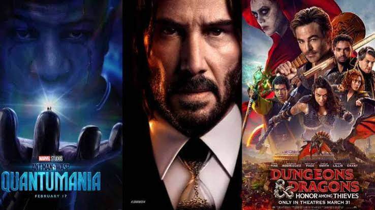

Berita Teknologi
Jakarta (ANTARA) - Perusahaan infrastruktur dan layanan teknologi informasi (IT) global, NTT Ltd., memprediksi pada tahun 2024 pengembangan dan pemanfaatan teknologi Artificial Intellegence (AI) akan semakin digencarkan di berbagai perusahaan dunia. Menurut Group EVP, New Ventures and Innovation, NTT Ltd, Shahid Ahmed perpaduan antara tren baru dan tren utama yang semakin berkembang di seluruh jaringan, Edge, 5G Privat, pusat data dan cloud juga akan menjadi fokus di 2024 ini.
Berita Olahraga
Jogging pagi secara rutin efektif membakar kalori untuk menurunkan berat badan, menjaga kesehatan jantung, meningkatkan stamina harian, serta memicu produksi hormon endorfin yang memperbaiki suasana hati. Udara yang segar dan paparan sinar matahari pagi juga memaksimalkan asupan vitamin D untuk kesehatan tulang.
Berita Hiburan
Mengunjungi taman hiburan adalah salah satu cara untuk mengisi liburan bersama keluarga dan teman-teman. Selain di Indonesia, terdapat banyak taman hiburan berskala internasional yang bisa Minasan kunjungi di Asia Tenggara. Selain tidak jauh, masing-masing taman hiburan ini memiliki tema unik yang tidak dapat dijumpai di tempat lain. Berikut 7 taman hiburan paling seru di Asia Tenggara.

AI & Inovasi
Perkembangan teknologi telah membawa manusia pada era baru yang dikenal dengan kecerdasan buatan atau Artificial Intelligence (AI). Teknologi ini memungkinkan mesin untuk meniru cara berpikir manusia, mulai dari mengenali pola, mengambil keputusan, hingga memberikan rekomendasi secara otomatis. Kehadiran AI tidak hanya menjadi inovasi, tetapi juga telah mengubah cara manusia bekerja dan berinteraksi dengan teknologi.

Sepak Bola Dunia
Brazil national football team memulai perjalanan mereka di Piala Dunia 2026 dengan hasil imbang 1-1 melawan Morocco national football team pada laga Grup C. Vinícius Júnior mencetak gol penyama kedudukan untuk Brasil setelah sempat tertinggal lebih dulu.

Film Terbaru
Read Next 5 Hadiah yang Cocok untuk Capricorn si Zodiak Pekerja Keras Qries Buat para moviegoers atau simply yang hobi nonton film, siap-siap di 2023 kamu bakal lebih banyak ke bioskop. Yup, 2023 bawa banyak film blockbuster yang sangat ditunggu. Itu juga termasuk empat film Marvel (because we can’t get enough of superheroes!). Setelah dua tahun “tidur” karena pandemi, akhirnya bioskop ramai lagi seperti normal dengan film terbaru. One thing for sure: 2023 is going to be a ride. Jadi, dari film-film terbaru bioskop yang tayang di 2023 ini, mana yang paling kamu tunggu? Ant-Man and The Wasp: Quantumania Film ketiga Ant-Man jadi franchise MCU pertama yang siap kita tonton di 2023. Meski jadwal tayangnya sempat tertunda satu tahun, kita tahu Paul Rudd nggak akan mengecewakan, terutama saat bertemu Jonathan Majors yang berperan jadi supervillain Kang the Conqueror.